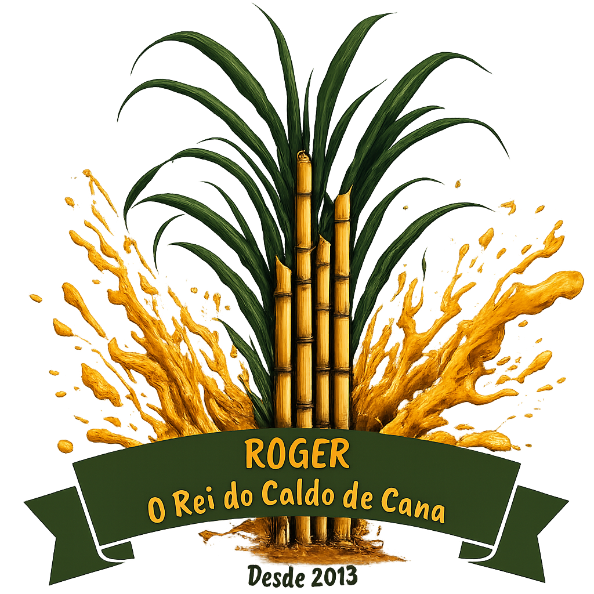
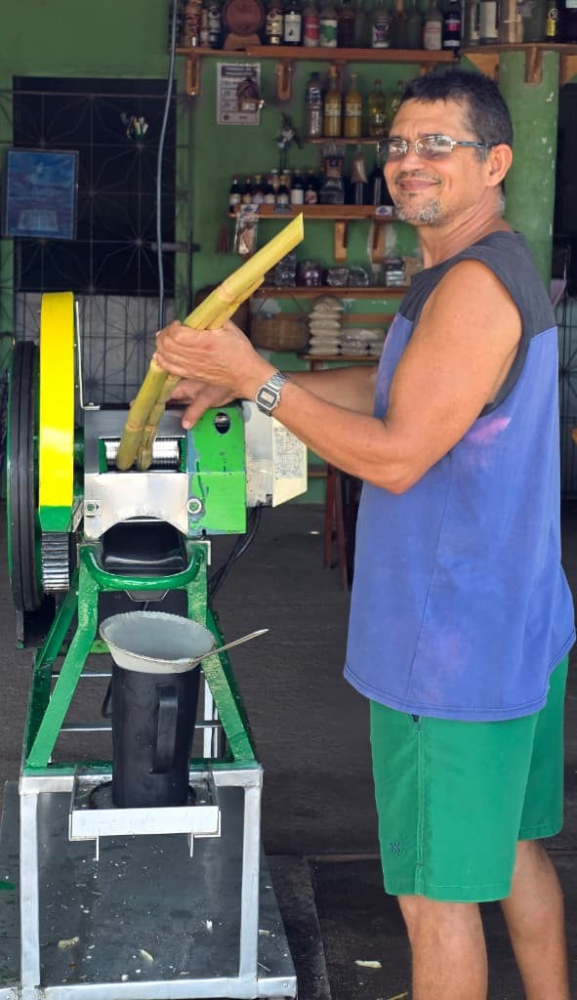

Desde 2013, o Roger o Rei do Caldo de Cana tem um compromisso simples e poderoso: levar o melhor caldo de cana e o pastel mais fresquinho para a mesa dos nossos clientes.
Sob o comando do Roger, construímos uma história baseada na confiança e na seleção rigorosa de cada ingrediente que chega até você.
Nossa essência vem de Pacatuba. Valorizamos quem planta e colhe em nossa terra, por isso compramos nossa cana diretamente dos produtores da região.
O resultado? Um caldo de cana fresquinho, moído na hora, mantendo todo o sabor e as propriedades naturais da planta.
Quer ver um novo sabor ou tem alguma ideia? Envie sua sugestão!
Atendimento todos os dias
📞 (85) 98126-6953
R. Vicente Ferrer De Lima, 1038
Pacatuba - CE